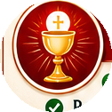
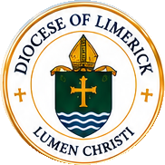
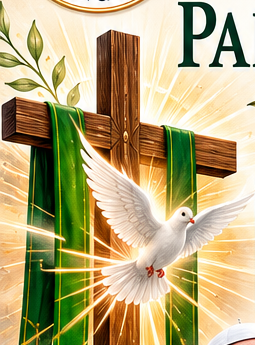
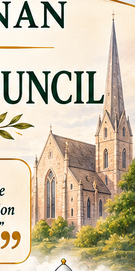
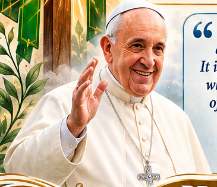
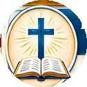
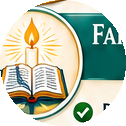
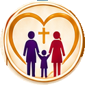
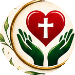

Liturgy Portfolio
- Priest – Kilcornan Pastoral Team
- Proclaimers Team
- Altar Servers Team
- Hospitality Team
- Music Team
- Sacristan Team

Diocese of Limerick
St. John the Baptist



“The Parish Pastoral Council is the forum for the effective participation of clergy and laity in the mission of the parish, which is the mission of the Church.” — Statutes of the Diocese of Limerick
“In all its activities, the parish encourages and trains its members to be evangelizers. It is a community of communities, a sanctuary where the thirsty come to drink in the midst of their journey, and a centre of constant missionary outreach.” — Pope Francis, Evangelii Gaudium, No. 28




